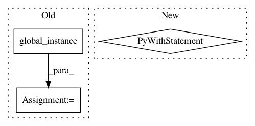

f86564af40ae2123d61254c46ef296e8b36be096,src/python/pants/backend/python/tasks/pytest_run.py,PytestRun,_test_runner,#PytestRun#Any#Any#,443
Before Change
interpreter = self.select_interpreter_for_targets(targets)
builder = PEXBuilder(interpreter=interpreter)
builder.info.entry_point = "pytest"
chroot = PythonChroot(
context=self.context,
python_setup=PythonSetup.global_instance(),
python_repos=PythonRepos.global_instance(),
targets=targets,
extra_requirements=self._TESTING_TARGETS,
builder=builder,
platforms=("current",),
interpreter=interpreter)
try:
builder = chroot.dump()
builder.freeze()
pex = PEX(builder.path(), interpreter=interpreter)
After Change
pex_info = PexInfo.default()
pex_info.entry_point = "pytest"
with self.temporary_chroot(interpreter=interpreter,
pex_info=pex_info,
targets=targets,
extra_requirements=self._TESTING_TARGETS,
platforms=("current",)) as chroot:
pex = PEX(chroot.path(), interpreter=interpreter)
with self._maybe_shard() as shard_args:
with self._maybe_emit_junit_xml(targets) as junit_args:
with self._maybe_emit_coverage_data(targets,
chroot.path(),
pex,
workunit) as coverage_args:
yield pex, shard_args + junit_args + coverage_args
def _do_run_tests_with_args(self, pex, workunit, args):
try:
// The pytest runner we use accepts a --pdb argument that will launch an interactive pdb
// session on any test failure. In order to support use of this pass-through flag we must
In pattern: SUPERPATTERN
Frequency: 3
Non-data size: 3
Instances
Project Name: pantsbuild/pants
Commit Name: f86564af40ae2123d61254c46ef296e8b36be096
Time: 2015-06-03
Author: benjyw@gmail.com
File Name: src/python/pants/backend/python/tasks/pytest_run.py
Class Name: PytestRun
Method Name: _test_runner
Project Name: pantsbuild/pants
Commit Name: dbb0443715bbaaafc5b4cf22adc7b6bb67fc3257
Time: 2015-08-12
Author: john.sirois@gmail.com
File Name: tests/python/pants_test/ivy/test_ivy_subsystem.py
Class Name: IvySubsystemTest
Method Name: test_proxy_from_env
Project Name: pantsbuild/pants
Commit Name: dbb0443715bbaaafc5b4cf22adc7b6bb67fc3257
Time: 2015-08-12
Author: john.sirois@gmail.com
File Name: tests/python/pants_test/ivy/test_ivy_subsystem.py
Class Name: IvySubsystemTest
Method Name: test_parse_proxy_string